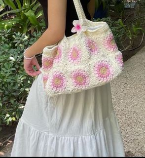
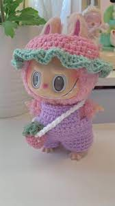

Even if you're brand new to crochet, you can still learn how to crochet stuffed animals.Fish are
among the simplest animals to crochet because they typically have one main body and a few fins.
The Tiny Zoo
Crocheting cute tiny animals is a delightful and relaxing craft that brings joy to anyone who tries
it. Each stitch is like a tiny puzzle piece, slowly transforming yarn into adorable little
creatures, from fluffy kittens and playful bunnies to tiny bears and cheerful birds. The magic
happens as you bring these animals to life with careful attention to detail—tiny ears, button-like
eyes, and sweet little smiles. What makes them even more charming is their size, small enough to fit
in the palm of your hand, making them perfect for gifting or displaying as a cute decoration.
Bag of Dreams

Crocheting a bag is a fun and rewarding project that combines creativity with functionality. The
process begins with choosing the right yarn—something durable but soft, like cotton or linen—and
selecting a pattern that matches your style, whether it’s a trendy tote, a chic clutch, or a
practical crossbody. As you crochet, the bag starts to take shape, with each stitch adding structure
and texture. You can personalize it with different colors, adding embellishments like tassels,
buttons, or even embroidered details for an extra touch of uniqueness.
Labubu's Yarned Wonders

Crocheting a Labubu is a delightful and rewarding experience, turning a simple ball of yarn into
an adorable, cuddly character. With each stitch, you can bring Labubu to life, starting with a
small, rounded body that gradually takes shape. The fun begins as you add tiny limbs, little
ears, and expressive eyes, all while imagining Labubu’s unique personality. Whether you choose
soft pastel colors for a sweet, gentle vibe or bright, bold hues for a more playful look, every
detail is part of making Labubu truly special.